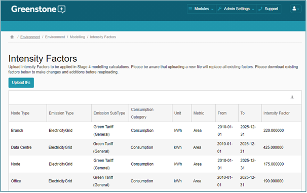
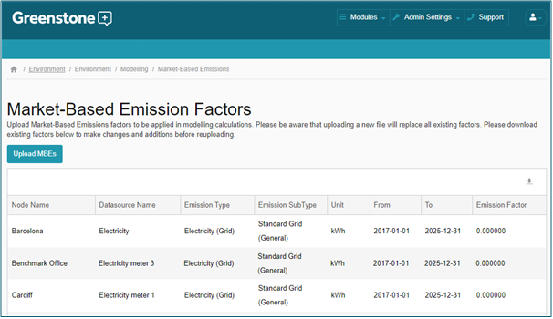
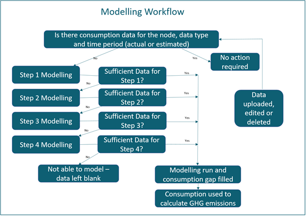

The modelling methodology uses a four step methodology to plug data gaps and is dependent on what data that specific location already has for the selected time period. Currently clients are using modelling across electricity, fuel and water datasource types.
The modelling methodology applies the below steps in order, only moving to the next step once the previous has been attempted.
When a site does not have consumption data, Step 1 is attempted first. This step takes consumption data (actual or estimated) from the same time period in the previous year and applies that as the modelled consumption value.
If the location does not have consumption data (actual or estimated) from the same time period in the previous year, Step 2 is used. Step 2 is applied if the location has actual data for at least seven months in the previous 12 months from the month that the modelling will apply to. The value used for the missing month is the average of the previous 12 months data. When calculating this data the system evaluates the variance of this average value and if it exceeds 50%, the next level of modelling is used for this location.
If the location does not meet the requirements for either Steps 1 or 2 then this option is used to model the data (Step 3). This option can only be used if the location has at least one actual data entry for the previous 12 months and has area (m2) data in the system for that month. For each of the last 12 months that has data and area data, a 6 month running average intensity factor is calculated and stored against that month. Then the average of those intensity factors is calculated over the last 12 months and this is multiplied by the location’s area to complete the modelling.
If a location has no actual data for any previous time period, then clients can define intensity metrics in the Admin area of Greenstone to apply Step 4 modelling. This is managed in Admin > Environment > Modelling > Intensity Factors (see screenshot below). When uploading intensity factors, please be aware that uploading a new file will replace all existing factors. Please download existing factors below to make changes and additions before reuploading.
Step 4 modelling will only occur if client specific intensity metrics have been defined and the associated nodes have floor area for the time period which is looking to be modelled. Clients can define their own Step 4 intensity metrics (associated with a node type) to apply a more transparent gap-plugging methodology to sites unable to be modelled on Steps 1-3.

In all steps, the consumption is modelled and the associated GHG emissions are calculated from the consumption values and the Greenstone emissions factors database as for non-modelled data.
If market-based emissions factors have been provided in Admin > Environment > Modelling > Market-Based Emissions then these factors will be used to calculate the market-based emissions for modelled consumption. As with calculating location-based emissions, the modelled consumption has the market-based emissions factor applied to calculate the market-based emissions. This applies to all modelling steps.
When modelling market-based emissions, the factors provided in Admin > Environment > Modelling > Market-Based Emissions are applied as priority one. Residual mix factors are applied as priority two and location-based as priority three.

